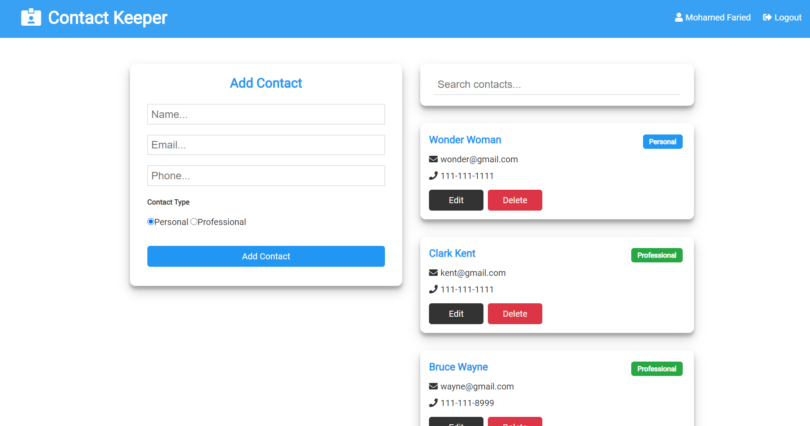

Contact Keeper

Contact Keeper is an application that allows users to create, update, search, and delete contacts in their contact list.
Tecnologies Used:
- REACT for front-end.
- Node.js & ExpressJS for creating the back-end API which controls the CRUD operations of the data and handles user authentication and session.
- Json Web Tokens [jwt] to manage user session and authentication using tokens.
- Mongoose module to create the database access layer and object data modeling.
- Cloud version of MongoDB which was created using Atlas.
Project Link: Contact Keeper
Expense Tracker
Contact Keeper is an application that allows users to keep of their expenses versus their income.
Tecnologies Used:
- REACT for front-end.
- Node.js & ExpressJS for creating the back-end API which controls the CRUD operations of the data and handles user authentication and session.
- Json Web Tokens [jwt] to manage user session and authentication using tokens.
- Mongoose module to create the database access layer and object data modeling.
- Cloud version of MongoDB which was created using Atlas.
Project Link: Expense Trackerr